금형기능사 (2003-07-20 기출문제)
1과목: 임의구분
1. 투영기에 의한 측정시 주의사항이다. 틀린 것은?
- 물체의 형상을 측정하므로 촛점거리를 정확히 맞춘다.
- 눈의 위치에 의한 시차는 일어나지 않는다.
- 피 측정물을 깨끗이 닦고 설치한다.
- 마이크로미터의 축선과 피측정물의 축선을 일치시킨다.
(정답률: 88%)

2. 그림과 같은 형상을 블랭킹하고자 한다. 전단력은 얼마인가? (단, 제품의 두께 2mm, 전단강도는 32kgf/㎜2이다.)
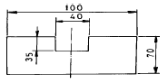
- 26.24ton
- 21.76ton
- 20.90ton
- 19.60ton
(정답률: 33%)
3. U - 굽힘에서 스프링 백의 방지법이 아닌 것은?
- 펀치의 내측에 구배 클리어런스를 만든다.
- 펀치의 밑면에 릴리프를 만든다.
- 다이측면에 구배 클리어런스를 만든다.
- 패드장치를 하여 펀치의 압력을 조절한다.
(정답률: 36%)
4. 순차이송 금형을 많이 제작하는 이유가 다음 중에서 아닌것은?
- 금형을 제작하는 공작기술을 향상시킬 수 있다.
- 생산량을 증가 할 수 있다.
- 제품생산시 많은 작업자가 필요하다.
- 안전작업이 가능하다.
(정답률: 89%)
5. 상하 롤(roll) 사이에 재료를 통과 시켜 소재의 두께를 감소시키는 가공법은?
- 압출 가공
- 단조 가공
- 인발 가공
- 압연 가공
(정답률: 60%)
6. 드로잉 가공된 제품의 내경을 외경으로 하면서 직경을 감소 시키는 가공법은?
- 재드로잉
- 역드로잉
- 아이어닝
- 스피닝
(정답률: 76%)
7. 다음 중 금형 재료를 선택할 때 고려해야 하는 사항이 아닌 것은?
- 연마성이 좋을 것
- 제작비가 높을것
- 표면정밀도가 좋을것
- 내식성이 높을것
(정답률: 91%)
8. 프레스 가공의 특징이 아닌 것은?
- 제품의 강도가 낮고 경량이다.
- 재료 이용율이 좋다.
- 가공 속도가 빠르다.
- 제품의 정도가 높다.
(정답률: 76%)
9. 재료이용률 구하는 공식으로 맞는 것은? ( 단, η:재료이용률(%), A:제품의 면적(㎜2), B:재료의 폭(mm), L:재료의 전장(㎜), Z:재료 한 개에서 가공된 제품의 수량)
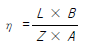
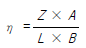
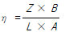
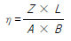
(정답률: 65%)
10. 프레스금형에서 펀치나 다이의 전단각을 주는 목적 중 가장 알맞은 것은?
- 펀치와 다이를 보호하기 위하여
- 전단면을 아름답게 하기 위하여
- 전단 하중을 줄이기 위하여
- 다이에 대한 펀치의 편심을 방지하기 위하여
(정답률: 58%)
11. 열경화성 수지가 성형후에 방치 또는 가열함에 따라 더욱 경화가 진행하는 것은?
- 슬로우 다운
- 아프터 큐어
- 실비 스트리크
- 스플릿 몰드
(정답률: 56%)
12. 다음 금형 부품 중 파팅라인(parting line)을 형성하는 부품으로 알맞게 연결된 것은?
- 고정측 설치판 - 가동측 설치판
- 이젝터 플레이트 - 받침판
- 고정측 형판 - 가동측 형판
- 로케이트 링 - 스톱 핀
(정답률: 71%)
13. 여러 개 빼기 금형에서 런너 레이아웃의 결정요인이 아닌것은?
- 캐비티의 수량
- 스프루의 형식
- 플레이트의 구성 단수
- 성형품의 형상
(정답률: 38%)
14. 사출금형에 있어서 냉각 구멍 위치에 고려하여야할 사항중 관계가 먼 것은?
- 캐비티와 코어의 고정방식
- 인서트 코어의 고정방식
- 이젝터 장치
- 플라스틱 수지의 종류
(정답률: 73%)
15. 금형관리에 있어서 금형 이력부를 만들 때 필요한 사항을 기록하는 내용 중 가장 관계없는 것은?
- 금형명칭
- 제조 연월일
- 고유번호
- 제작자 경력
(정답률: 87%)
16. 서로 다른 재료의 혼입으로 인하여 성형품이 운모와 같이 얇은 층으로 되어서 벗겨지는 현상은?
- 과충진
- 표층박리
- 백화
- 언더컷
(정답률: 84%)
17. 사출성형시 사출압에의해 코어 부품이 뒤로 밀리는 것을 방지하는 부품은?
- 받침판(support plate)
- 고정측 형판(cavity retainer plate)
- 가동측 설치판(core retainer plate)
- 이젝터 판(ejcter plate)
(정답률: 54%)
18. 금형의 캐비티 내에서 일정시간 성형품이 고화되어 가는 것을 무엇이라 하는가?
- 이젝팅
- 밴드히팅
- 큐어링
- 크레이징
(정답률: 58%)
19. 성형된 제품을 금형 밖으로 빼내주는 기능을 가진 핀은?
- 스톱 핀
- 가이드 핀
- 이젝터 핀
- 리턴 핀
(정답률: 79%)
20. 2매 구성 사출금형에서 파팅면이 평면일 경우 가장 많이 사용되는 러너 단면 형상은?
- 사각형
- 사다리꼴형
- 원형
- 육각형
(정답률: 46%)
2과목: 임의구분
21. 방전가공에서 전극재료의 구비조건이 아닌 것은?
- 방전이 안정되어야 한다.
- 전극의 소모가 빨라야 한다.
- 기계적인 강도가 어느 정도 있어야 한다.
- 기계 가공성이 좋아야 한다.
(정답률: 91%)
22. 공작물 고정장치의 종류가 아닌 것은?
- 센터, 리테이너
- 바이스, 지그
- 지그, 콜릿척
- 고정구, 맨드릴
(정답률: 70%)
23. 선반작업시 안전작업에 적당하지 않는 것은?
- 선반 작업전에 반드시 척 핸들을 뺀다.
- 기어 변환은 반드시 기계의 정지 후에 한다.
- 바이트 자루를 가능한 한 길게 물린다.
- 긴 칩은 고리를 사용하여 제거한다.
(정답률: 82%)
24. 지그보링가공의 드릴작업에서 작업내용을 설명한 것이다. 옳은 것은?
- 구멍이 많을 때는 변형이 발생할 우려가 있으므로 큰 지름부터 작은 지름의 구멍으로 차례로 가공 한다
- 드릴 구멍은 엔드밀, 리머, 보링 공구로 다듬을 구멍의 예비 구멍을 뚫기 위해 사용 된다.
- 테이블은 최단 거리로 이동하도록 한다.
- 리머작업 후 드릴작업을 한다.
(정답률: 53%)
25. 토글 클램프의 종류가 아닌 것은?
- 하향 잠금형
- 압착형
- 자립형
- 직선이동형
(정답률: 51%)
26. 다음 중 안전장치에 관한 사항 중 틀린 것은?
- 안정 장치는 항상 점검한다.
- 작업상 불편하면 제거한다.
- 안전장치가 불량하면 즉시 수리한다.
- 작업전 안전장치를 확인한다.
(정답률: 90%)
27. 호칭지름 10 mm, 피치1.5 mm인 미터보통 암나사를 가공하기위한 가공방법은?
- 드릴 가공
- 리이머 가공
- 다이스 가공
- 탭 가공
(정답률: 91%)
28. 소성가공에서 열간가공과 냉간가공을 구분하는 조건은?
- 단조 온도
- 변태점 온도
- 담금질 온도
- 재결정 온도
(정답률: 60%)
29. 블록 게이지(block gauge) 형상이 아닌 것은?
- 요한슨형(Johansson)
- 호크형(Hoke)
- 캐리형(Cary)
- 블록형(block)
(정답률: 61%)
30. 연삭 작업의 작업 안전 중 잘못 된 것은?
- 플랜지의 지름을 숫돌지름의1/3-1/2의 것을 사용한다
- 연삭 숫돌과 공작물 받침대 사이의 틈새는 3㎜ 이내가 되도록 조정한다.
- 평형 숫돌은 가급적 측면을 사용한다.
- 정지하고 있는 숫돌에 연삭액을 주지 않도록 한다.
(정답률: 63%)
31. NC의 발달과정에 속하지 않는 것은?
- CNC
- DNC
- NC
- FAMT
(정답률: 84%)
32. 온도 변화에 따라 열팽창계수, 탄성계수 등이 변하지 않는 강을 불변강 이라 한다. 불변강에 해당되지 않는것은?
- 인바(invar)
- 엘린바(elinvar)
- 플라티나이트(platinite)
- 슈퍼말로이(supermalloy)
(정답률: 59%)
33. 프레스 작업시 브레이크 스루(brake through) 현상을 최소로 하기 위하여 프레스의 선정시 공칭 압력의 몇 % 정도 사용이 가장 좋은가?
- 30∼40 %
- 40∼50 %
- 50∼60 %
- 60∼70 %
(정답률: 44%)
34. 드릴 작업시 주의해야 할 사항 중 틀린 것은?
- 가공물을 손으로 지지하고 드릴링하지 않는다.
- 가공물이 회전하지 않도록 한다.
- 얇은 가공물을 드릴링 할 때는 보조판 나무를 사용한다.
- 작은 공작물을 드릴링 할 때는 면장갑을 끼고 손으로 잡는다.
(정답률: 88%)
35. 밀링작업에서 주의해야 할 사항 중 가장 옳지 않은 것은?
- 보안경을 사용한다.
- 칩을 제거할 때는 브러시로 한다.
- 일감은 기계가 완전히 정지한 상태에서 고정한다.
- 절삭 중 대략적인 측정은 측정기로 해가면서 작업한다.
(정답률: 90%)
36. 열전대 종류 중 가장 높은 온도를 측정할 수 있는 것은?
- 백금 - 백금로듐
- 철 - 콘스탄탄
- 구리 - 콘스탄탄
- 크로멜 - 알루멜
(정답률: 67%)
37. 40-50% Ni 함금으로 전기저항이 높고 온도계수가 낮으므로 전기저항재료로 사용되는 것은?
- 큐프로 니켈
- 모넬메탈
- 콘스탄탄
- 베네딕트 메탈
(정답률: 80%)
38. 리벳 지름이 d(㎜)인 1열 겹치기 리벳이음에서 1피치마다의 하중 W(㎏f)를 구하는 식으로 옳은 것은?(단, 리벳전단면은 1개소이며, τ(㎏f/㎜2)는 허용 전단 응력이다.)
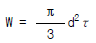
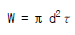
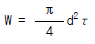
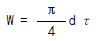
(정답률: 65%)
39. 온도변화에 따라 재료 내부에 생기는 응력은?
- 열응력
- 인장응력
- 변화응력
- 집중응력
(정답률: 81%)
40. 다음은 오일리스 베어링을 설명한 것이다. 관계없는 것은?
- 기름 보급이 곤란한 곳에 사용한다.
- 고속 회전부에는 부적당하다.
- 구리, 주석, 흑연의 분말을 혼합 성형한 것이다.
- 백금과 납의 합금이다.
(정답률: 54%)
3과목: 임의구분
41. 프레스가공은 금형재료에 대해 하중이 매우 많이 반복되어 사용된다. 금형재료 선택시 가장 중점을 두어야 할 사항은?
- 내마모성이 클 것
- 피로한도가 높을 것
- 내압축성이 좋을 것
- 기계가공이 용이할 것
(정답률: 61%)
42. 플라스틱 재료로서 동일 중량으로 기계적 강도가 강철보다 강력한 재질은?
- 글라스 섬유
- 폴리카보네이트
- 나일론
- F.R.P
(정답률: 60%)
43. 코일 스프링에 하중을 36㎏f 작용시킬 때 처짐량이 6㎜였다면, 스프링 상수값은 몇 ㎏f/㎜인가?
- 6
- 7
- 8
- 10
(정답률: 86%)
44. 두 축이 어느 각도로 교차될 때 쓰이는 기어는?
- 하이포이드 기어
- 웜 기어
- 헬리컬 기어
- 크라운 기어
(정답률: 45%)
45. 항복점이 일어나지 않는 재료는 항복점 대신 무엇을 쓰는 가?
- 내력
- 비례한도
- 탄성한도
- 인장강도
(정답률: 51%)
46. 피치 4mm인 3줄 나사를 1회전 시켰을 때의 리드는?
- 6mm
- 12mm
- 16mm
- 18mm
(정답률: 93%)
47. 감아올릴 때는 클러치 작용을, 내릴 때는 하중자체에 의해 브레이크 작용을 하는 것은?
- 블럭브레이크
- 밴드브레이크
- 자동하중 브레이크
- 축압브레이크
(정답률: 72%)
48. 베어링 호칭번호 6208에서 안지름은 얼마인가?
- 8㎜
- 18㎜
- 32㎜
- 40㎜
(정답률: 84%)
49. 강재의 KS기호 중 옳지 않는 것은?
- SKH - 고속도 공구강재
- SM - 기계 구조용 탄소강재
- SPS - 스프링강
- STS - 탄소공구강
(정답률: 62%)
50. 주철의 조직은 어느 원소의 함유량에 따라 영향을 가장 많이 받는가?
- 탄소와 황
- 탄소와 규소
- 탄소와 망간
- 탄소와 인
(정답률: 68%)
51. 물체의 일부분의 생략 또는 단면의 경계를 나타내는 선으로 자를 쓰지 않고 자유로이 긋는 선의 명칭은?
- 파단선
- 지시선
- 가상선
- 절단선
(정답률: 70%)
52. 다음 중 현의 길이를 표시하는 치수선은?
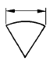
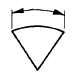
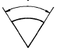
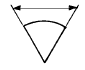
(정답률: 61%)
53. 다음 끼워맞춤 치수공차 기호 중 헐거운 끼워맞춤은?
- φ50 H7 / k6
- φ50 H7 / e7
- φ50 H7 / t6
- φ50 H8 / p7
(정답률: 54%)
54. 보기의 평면도 공차의 두께 해석으로 올바른 것은?
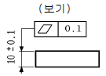
- 10.1 일 때 0.1 까지 허용
- 10.1 일 때 0.2 까지 허용
- 두께 불문하고 0.2 까지 허용
- 두께 10.1 일때는 공차치수를 허용하지 않음
(정답률: 60%)
55. 도면에서 구멍 가공방법을 "B"로 지정한 KS 약호기호는?
- 보링머신 가공
- 부로우칭 가공
- 리머 가공
- 블라스트 가공
(정답률: 86%)
56. 다음 중 단식 드러스트 보울 베어링의 약도는?
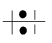
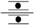
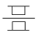
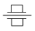
(정답률: 64%)
57. 다음 보기와 같은 부품란의 설명 중 틀린 것은?
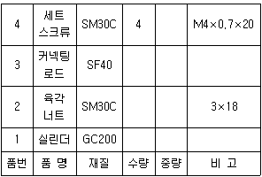
- 실린더의 재질은 회주철이다.
- 육각 너트는 기계구조용 탄소강이며 최대 인장강도가 30 kgf/cm2 이다.
- 커넥팅로드는 단조품이며 최저 인장강도가 40kgf/mm2이다.
- 세트 스큐류는 호칭지름이 4mm 이고, 피치 0.7mm 인 미터 나사이다.
(정답률: 60%)
58. 상하 대칭인 보기 입체도를 화살표 방향이 정면일 때, 좌측면도로 가장 적합한 것은?
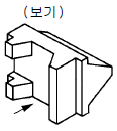
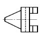
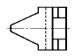
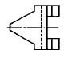
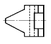
(정답률: 48%)
59. 보기 입체도의 정면도로 가장 적합한 것은?
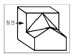
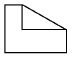
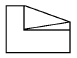
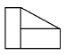
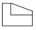
(정답률: 78%)
60. 단면도의 표시방법에서 그림과 같은 단면도의 명칭은?
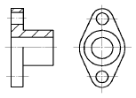
- 전단면도
- 한쪽 단면도
- 부분 단면도
- 회전 도시 단면도
(정답률: 60%)